create dictionaries

code breakdown: create dictionary correctly (left img)
- create dictionary format : dic_var ={key:value}
- dic_var : Variable that contains the dictionary
key : The key in the dictionary, used for locating entries
value : The value of each key
{:} : The brackets represents a dictioary and the colon is the seperator of the key and value
- Line 2: Create dictionary
- Lines 3-6 : Key:value pairs
- These are the key and values of eact set in the dictionary
- Line 9: Output dictionary
- Rules
incorrect dictionary creation (right img)
If there are duplicates of a key, the latest key would be kept while the earlier versions would be
removed
Access individual values
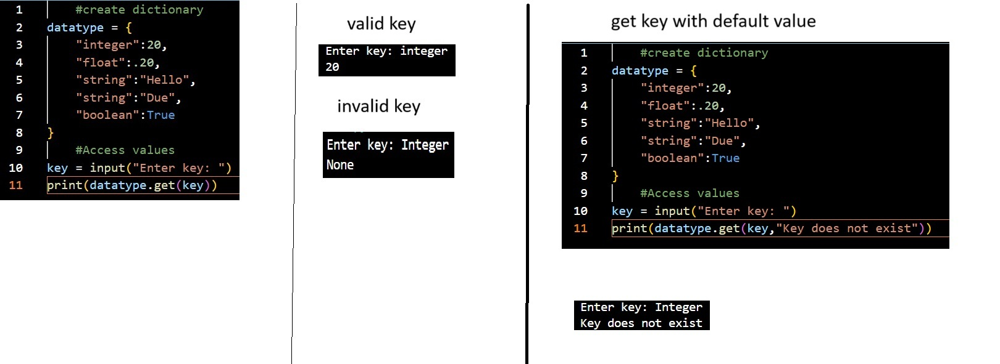
code breakdown
- dic_var.get(key)
- dic_var : variable that contains the dictionary
.get() : Method to retrieve the value of the indicated key
- Line 2: Create dictionary
- Lines 3-7: key value pairs
- These are the key and value pairs of a dictionary
- Line 9: Key input
- user input key name
- Line 11: Retrieve value
- Retriee the value of the indicated key
- Results:
get value with defaulting value (far right img)
- get value with defaulting message : dic_var.get(key,default message)
- dic_var : variable that contains the dictionary to search
.get() : Method to retrieve value based on key input
key : The key to search
default message: This is the message that will display if no key exists
updating values and creating new key value sets
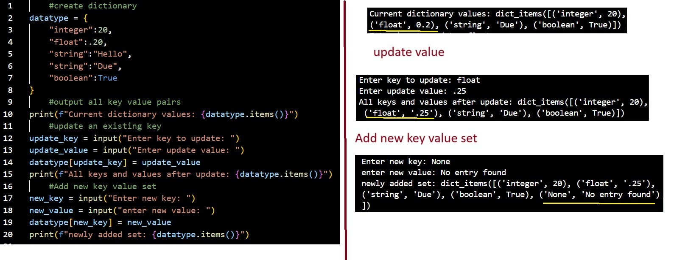
code breakdown
- update value or create key:value : dic_var[key] = value
- dic_var : variable that contains the disctionary
key: The key in which a user wants to target
value: The new input value assigned to the key
- Line 2: create dictionary
- Line 3-7 : Key value pairs
- These are the key and value pairs that are in the dictionary
- Lines 10,15,20: Output all key value pairs in dictionary
- Line 10: These are the original key:value pairs upon initialization
Line 15: These are the key value pairs after one of the keys have been updated (yellow underline)
Line 20: These are the new key value pairs after a new set have been added to the dictionary (yellow underline)
- Lines 12,17: Enter key input
- Line 12: This key input is for targeting a key to update, which means this key already exists in the dictionary
Line 17: This key input it to add a new key, which means this key originally does not exist in the dictionary
- Line 13,18 : value input
- Line 13: This value input is the new input that is to be stored into an existing key
Line 18: This value input is to be stored into a newly created key
- Extra:
displaying all keys, values, or key:value pairs
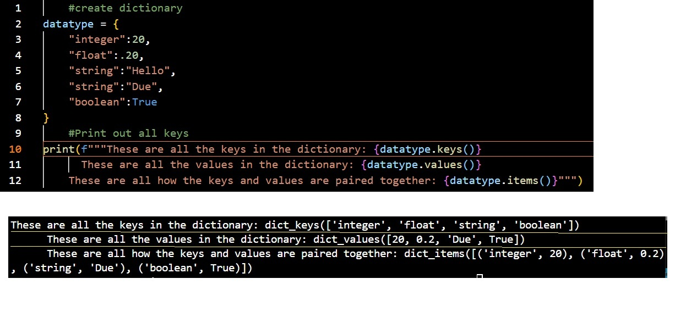
code breakdown
- Output all keys only: dic_var.keys()
output all values only : dic_var.values()
output all key:value sets in pairings : dic_var.items()
- dic_var : variable that contains the dictionary
.keys() : method to access all keys in the dictionary
.values() : Method to access all values in a dictionary
.items() : Method to access all key:value sets and maintains their pairing structure
- Line 2 : Create dictionary
- Lines 3-7: key : value pairings
- These are the key and value pairs of the dictionary
- Line 10: output keys
- Only displays the keys of the dictionary in the order that they are created
- Line 11: output values
- Only displays the values of the dictionary in the order that they were created
- Line 12: Output key:value pairs
- Displays all the key:value pairs in the way that they were created
Removing a key:value pair from dictionary
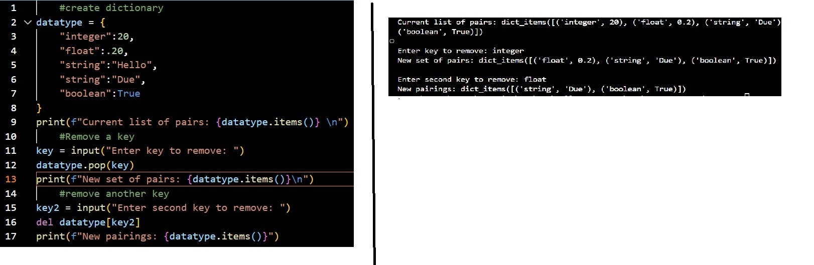
code breakdown
- remove entry method 1: dic_var.pop(key)
remove entry method 2: del dic_var[key]
- dic_var : variable that contains the dictionary
.pop : method to remove a key value pair from a dictionary
del : Method to delete something
key : The key to locate and delete pair from the dictionary
- Line 2 : create dictionary
- Lines 3-7 : Key value pairs
- These are the key value pairs stored in the dictionary
- Lines 12,16 : The two methods to remove a key:value pair
- Note:
delete an entire dictionary
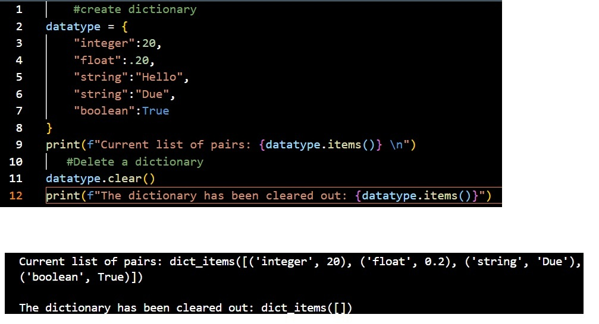
code breakdown
- Line 2: Create dictionary
- Lines 3-7: Key value pairs
- These are the key value pairs of the dictionary
- Line 11: delete dictionary
- This clears out all the entries in the dictionary leaving it blank
itterate through keys/values/key:value pairs individually
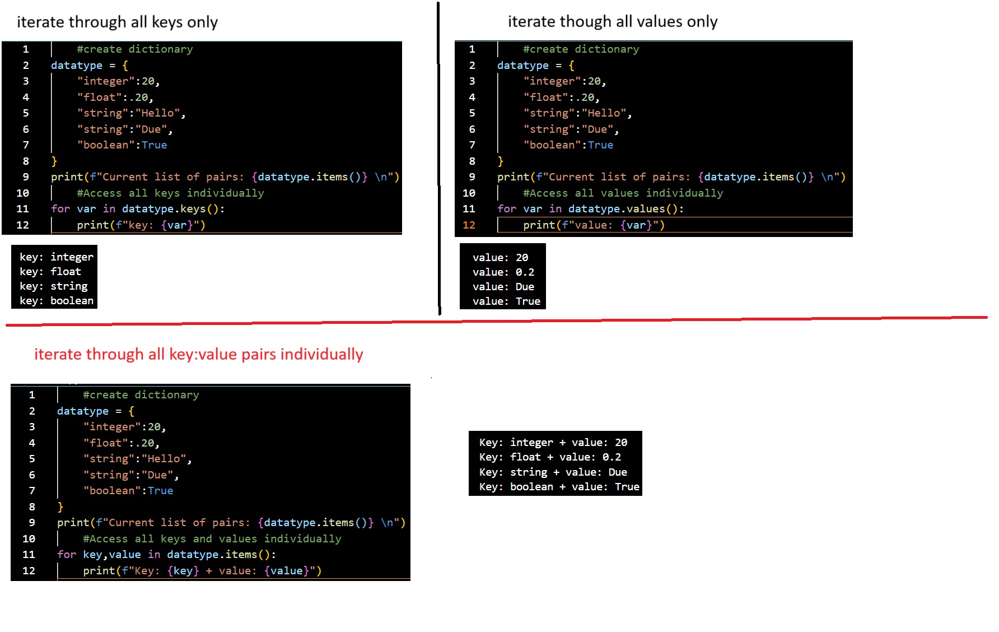
code breakdown: Access keys only (top left img)
- Access all keys: for var in dic_var.keys()
- for var in : for loop used to itterate all the keys in the dictionary individually
__var : This is a variable used to store the current key being accessed in he dictionary
dic_var.keys() : This function is used to access all keys in the dictionary
- Line 2: Create dictionary
- lines 3-7: key value pairs
- These are the key value pairs of the dictionary
- Line 11: key itteration
- Access all the keys using the dic_var.keys() method then use a for in loop
to itterate through each and every key
code breakdown: Access only values (top right img)
- Access all keys: for var in dic_var.values()
- for var in : for loop used to itterate all the values in the dictionary individually
__var : This is a variable used to store the current value being accessed in he dictionary
dic_var.values() : This function is used to access all values in the dictionary
- Line 2: Create dictionary
- lines 3-7: key value pairs
- These are the key value pairs of the dictionary
- Line 11: value itteration
- Access all the values using the dic_var.values() method then use a for in loop
to itterate through each and every value
Access all key and value pairs(bottom img)
- Access all keys: for var1,var2 in dic_var.items()
- for var1,var2 in : for loop used to itterate all the keys in the dictionary individually
__var1,var2 : .items() method access both key and value of the dictionary, therefore two variables
are called.
______var1 : variable used to hold the key being accessed
______var2 : variable used to hold the value being accessed
dic_var.items() : This function is used to access all keys and values in the dictionary
- Line 2: Create dictionary
- lines 3-7: key value pairs
- These are the key value pairs of the dictionary
- Line 11: key itteration
- Access all the keys and values using the dic_var.items() method then use a for in loop
to itterate through each and every key value pair
create dictionary with zip
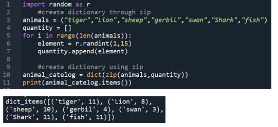
code breakdown
- var = dict(zip(list1,list2))
- var : variable that will store the dictionary
dict : constructor that defines the current set as a dictionary (datatype conversion)
zip : links up the indicated lists together (links up by index)
__The zip function will return a zip datatype
list1, listn : the lists that would be used to create the dictionary
- Line 1: Import random library
- Line 3: Create tuple
- These values would represent the keys of the dictionary
- Line 4: Create list
- A blank list to store the elements that represents the values of the dictionary
- Lines 5-7: Iteration loop
- Loop to generate random numbers for the values of the list
__Line 6: Using the random library to generate a series of random values between 1-15
- Line 10: Create a dictionary using the zip function (first element is the keys, second element is the values)
- Line 11: print all the key : value pairs
create dictionary with default none type
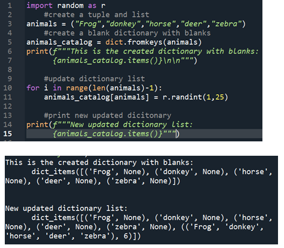
code breakdown
- Line 1: import library
- Line 3: create tuple
- This tuple will be used to fill in the keys for the dictionary
- Line 4: empty list
- This is to contain the elements that will represent the values of the dictionary
- Lines 5 - 7 : loop to generate values
- Line 6: Generate a random number between 1-15 and store into variable element
- Line 7: Store the generated element into list quantity
- Line 10: create dictionary with zip function
- var = dict.fromkeys(key,value)
- var : variable that stores the dictionary
dict.fromkeys : dictionary function that allows to create a dictionary with none value
____The none datatype acts as a place holder, by default creating a key with no value leaves the value blank
key : insert the key element
value : enter the value paired with the indicated key
dictionary with set default function
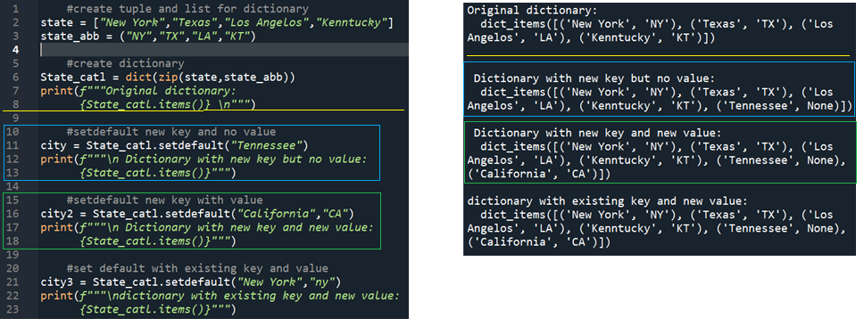
code breakdown
- var = dict.fromkeys(keys,values)
- var : variable that contains the dictionaty
dict. : dictionary constructor to convert following elements into a dicitonary format
fromkeys() : method to set keys with a none value if no value is assigned to the key
keys: variable that contains the keys for the dictionary
values : variable that contains the values for the associated keys
__ The values can be excluded
- Line 2: Create list
- This list would be used to create the values of the dictionary
- Line 3: Create tuple
- This tuple will be used to create the keys of the dictionary
- Line 6: Create dictionary with zip function
- Combines the tuple and list to create the dictionary
- Line 11: setdefault with new key only
- This would create a new key value pair where the value is a none type
__This happens because the indicated key does not exit and a value was not provided
- Line 16: setdefault with new key and value
- This would create a new dictionary pair with the indicated key and value
__This happens because the indicated key does not exist in the current dictionary
- Line 21: setdefault with existing key and new value
- This would return the existing key and value pair but no information was replaced
- note:
merge : update existing dictionary with another dictionary
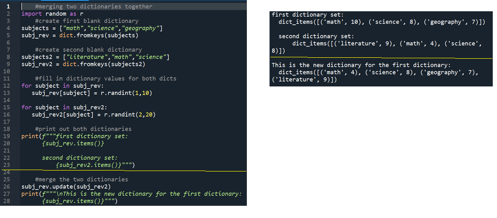
code breakdown
- update dictionary : dict1.update(dict2)
- dict1 : The dictionary being updated
update : method to update a dictionary
dict2 : dictionary used to perform the updating
- Line 2: import library
- Line 4,8: Create tuples with defined values
- These are the elements used to create the keys for the first and second dictionary
- Lines 5,9: Create Dictionaries
- Create two sets of dictionaries with keys but no values
- Lines 12-13, 15-16: Fill in values
- Loop through each dictionary and insert a value
Use a random generator to generate a random value within the indicated bounds
- Lines 19 - 23: print values
- Print pairs of each dictionary
- Line 26: Merge dictionaries
- Merge the second dictionary into the first dictionary
- note:
creating copy and deep copies
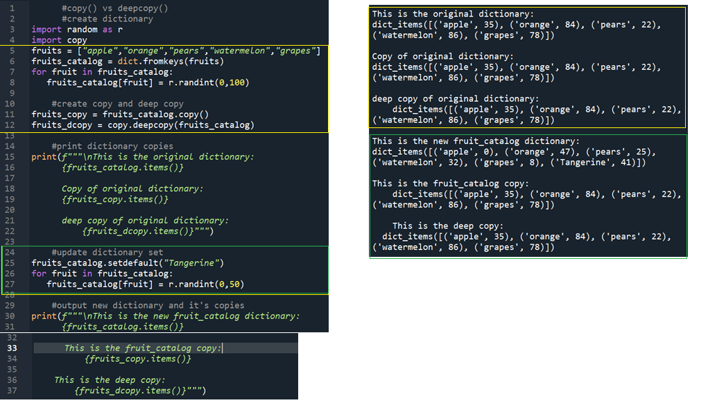
- dictionary copy: dict.copy()
dictionary deep copy: copy.deepcopy(dict)
- dict : name of the dictionary
.copy() : calling the function to create a shallow copy of the dictionary
deepcopy() : function to create a deep copy of the dictionary
- Line 3-4: import libraries
- Line 5: Create tuple
- Tuple used to create keys of a dictionary
- Line 6: Create empty dictionary
- Dictionary only contains keys but no values
- Lines 7-8 : Insert values
- Use a for loop to iterate each key and insert a randomly generated number
between the indicated bounds as the value for the key
- Lines 11-12 : create copies
- These would be the copy and deep copy of the original dictionary
- Lines 15-22 : print dictionaries
- Prints out the original, copy, and deepcopy of the dictionary
- Line 25: new pair
- Create a new key key with "default" value into current dictionary
- Lines 26-27: change values
- Iterates through the current existing dictionary and change the values of the dictionary
- Lines 30-37: output dictionaries
- Prints out the original, copy, and deep copy. Purpose is to see how a copy and deep copy is affected
- notes:
3) differences between copy and deep copy:
___changes to the values of the original will affect the copy, but not the deep copy
clear dictionary pairs

code breakdown
- clear dictionary: dict.clear()
- dict : name of the dictionary
clear() : function to remove all keys and values in the dictionary
- Line 1: import library
- Line 3: Create set
- Set would be used to create the keys of a dictionary
- Line 4: Create dictionary
- Creates a dicitonary with keys but no values
- Lines 7-8: Insert values
- Iterate through dictioanry to access each key to insert a randomly generated number within bounds as the value
- Line 15: clear dictionary
- This deletes all the key value pairs but retains the dictionary making it a place holder
manual iterator function: iter()
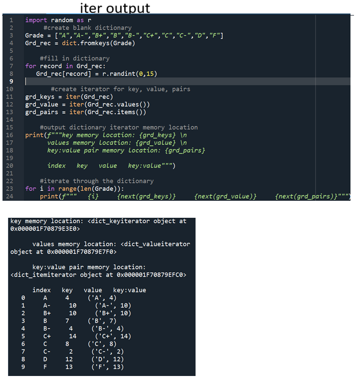
code breakdown
- create iterator: iter(iterable)
iterate : next(iterable)
- iter : Function to convert an iterable to an iterator
iterable : a data structure that is iterable i.e. list, tuple, dictionary
next: function of iter to move to the next element in the iterable
- Line 1: import library
- Line 2: create tuple
- Tuple will be used to create the keys of a dictionary
- Line 4: Create dictionary
- Creates a dictionary with keys but no values
- Lines 7-8: insert values
- loop through each key and inserts a random generated value within bounds as the value of accessed key
- Line 11: itterable keys
- Converts dictionary keys only into a manual itterable and store into a new variable
- Line 12: iterable values
- Converts dictionary values only into a manual itterable and store into a new variable
- Line 13: iterable key value pairs
- Converts the key value pairs into a manual itterable and store into a new variable
- Lines 23-24: manually iterate through itterables
- Using a for loop to manually iterate through each iterable (key, value, pairs) and print them out
- note:
sorting dictionaries
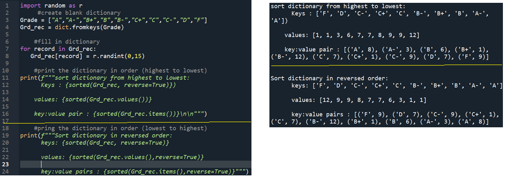
code breakdown
- Line 1: import library
- Line 3: Create tuple
- Tuple will be used to create a the keys of a dictionary
- Line 4: Create dictionary
- Using the tuple to create a dictionary with keys but no values
- Line 7-8 : insert values
- Loop through the dictionary to and insert a random gnerated value within bounds as the value to the accessed key
- Lines 11-16: print sorted lists in descending order
- Line 12: sort keys only and print
check if key in dicionary
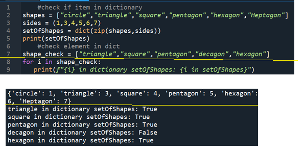